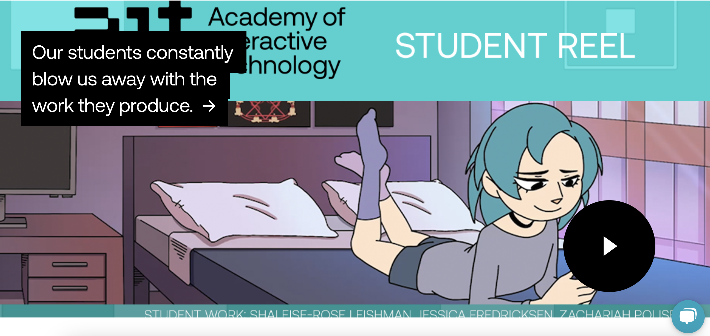
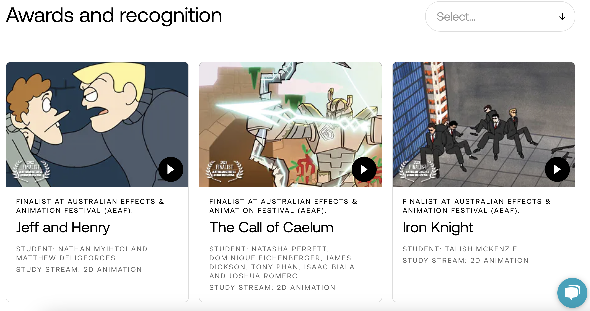
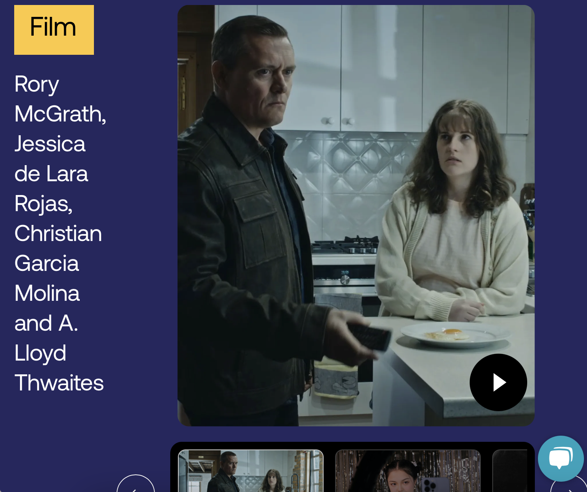

Analyse the use of Video on the Web
Source - "Academy of Interactive Technology"
What are the videos used for?
Can you find evidence of video used with intent, which enhances information comprehension, retention and appeal?
What benefits and caveats of video use can you witness?
Is the length of videos suitable?
How is video combined with other media (images, text, video) in order to synthesise a multimedia production?
Examples
  
Mood Board
Generate a Portfolio of Audio Content
By searching audio databases, I found two sounds which I would like to use on my multimedia website
Source - "Pexels"
Women taking notes while on a video conference by Pavel Danilyuk
Optimise Your Video for Web Use